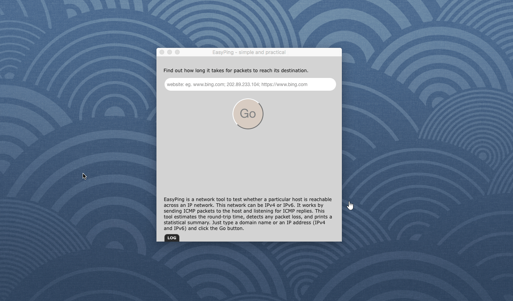

OVERVIEW
EasyPing is a network scanning tool for Mac users to test whether a particular host is reachable across an IP network. This network utility can be IPv4 or IPv6. It works by sending ICMP packets to the host and listening for ICMP replies. This tool estimates the round-trip time, detects any packet loss, and prints a statistical summary. Just type a domain name or an IP address (IPv4 and IPv6) and click the Go button. Try the EasyPing now and see how it can make your life easier. Everything you need is contained in one simple installer, no additional downloads or plug-ins are required. We make it simple for you, now and later!
Learn more about EasyPing.



USE CASES: BUILT FOR YOU
EasyPing is used to test if the network is operating and also to see if network connections are intact. EasyPing uses the Internet Control Message Protocol (ICMP)Echo function. A small packet is sent through the network to a particular IP address. This packet contains 64 bytes - 56 data bytes and 8 bytes of protocol reader information. The computer that sent the packet then waits and listens for a return packet. If the connections are good and the target computer is up, a good return packet will be received. You should use EasyPing, if you are:
● Businessmen in Internet
● Webmasters and developers
● Network editors
● Programmer
In such cases, users need to continuously check the accessibility of your web server and your connection quality, and get up-to-date information about the reachability of your website all day long. EasyPing offers cost-effective and reliable uptime and performance monitoring for your websites. With EasyPing you can monitor your website’s uptime, performance, and interactions for a better end-user-experience. In short, we wanted it to be a easy-to-use tool to help webmasters and web merchants everywhere optimize the performance of their websites.